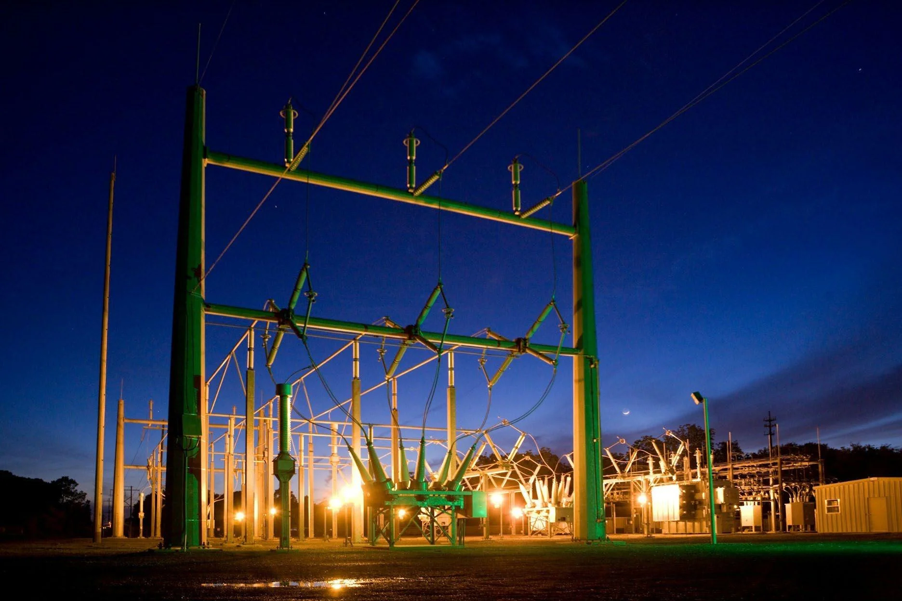
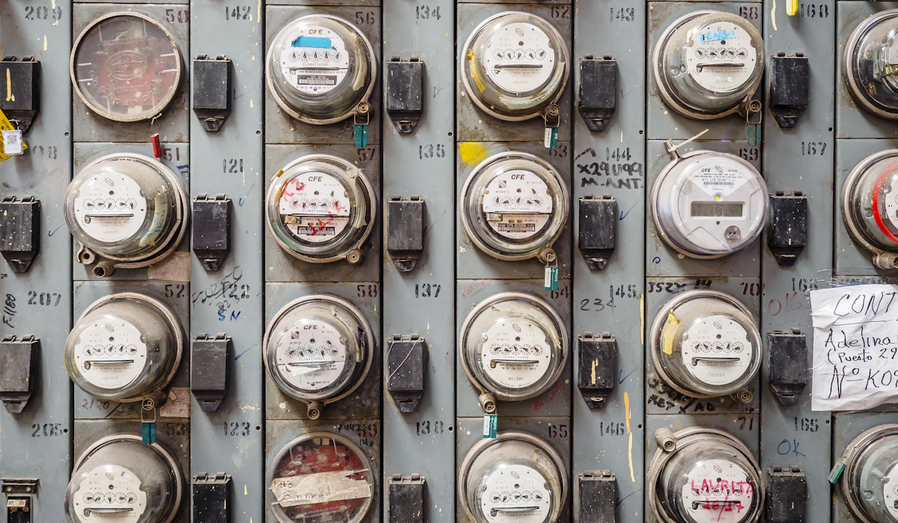
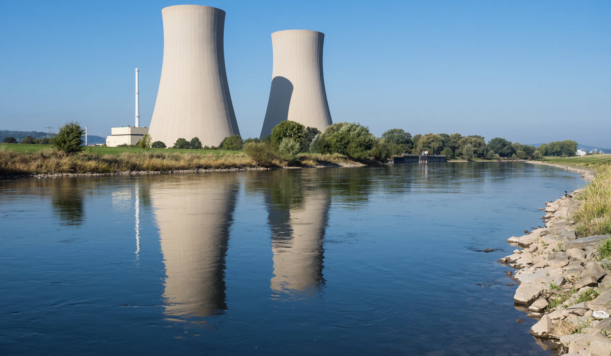
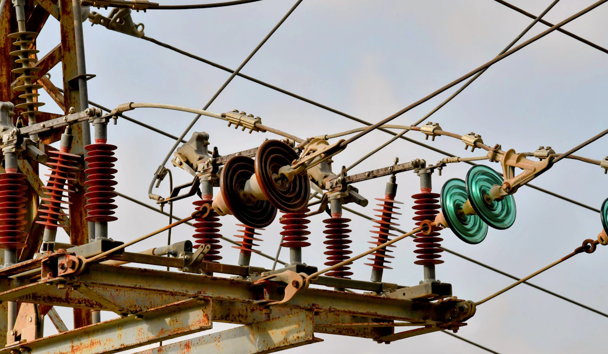
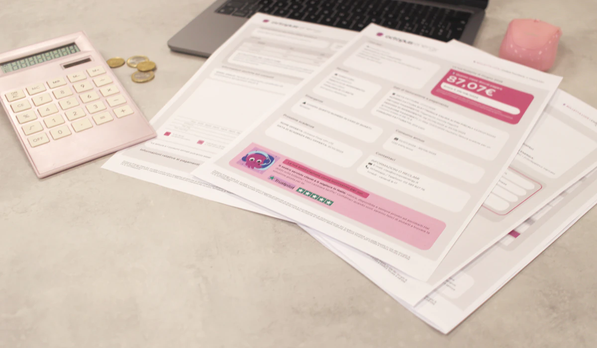
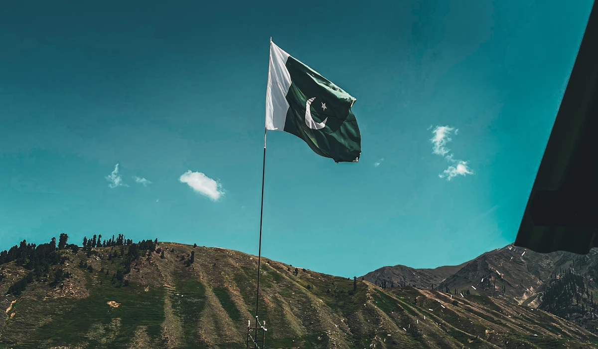
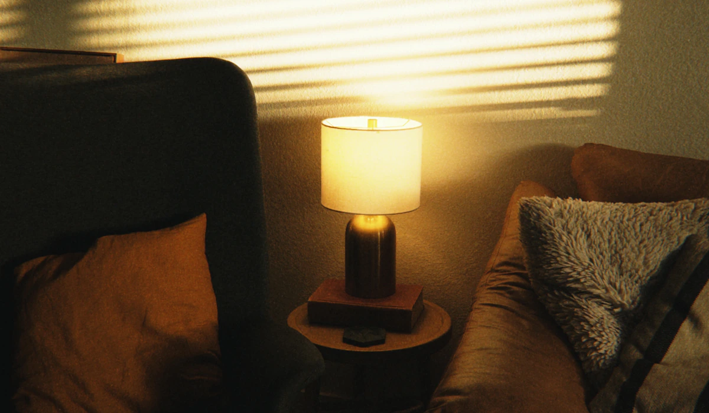
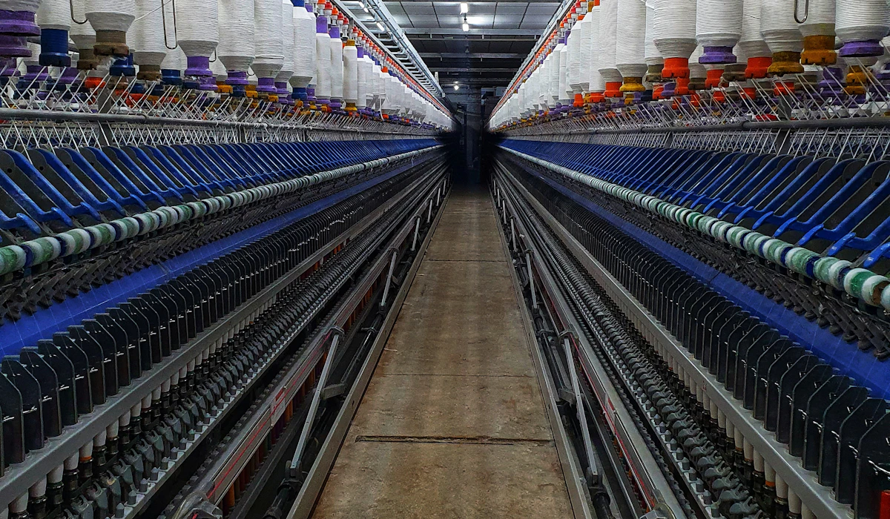
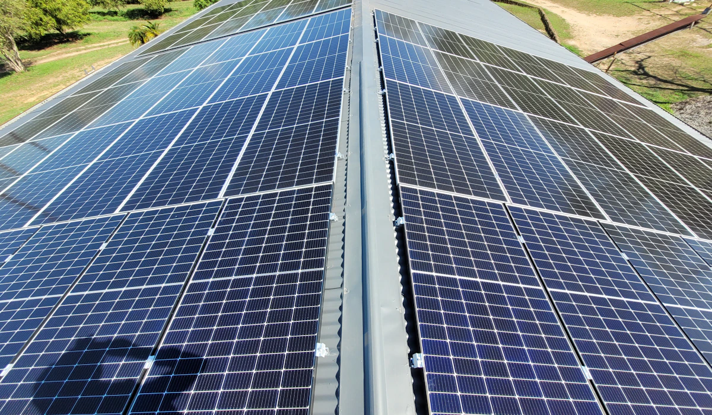

Part 01 / Understanding Pakistan’s Electricity Ecosystem
Understanding Pakistan’s Electricity Ecosystem
How generation, transmission and distribution shape the price and reliability of the electricity that reaches consumers.
Pakistan and Counting / Energy series
Nine stories about the system behind the switch, and the choices that could change it.
A country with spare power plants can still struggle to keep the lights on. A family that uses fewer units can still face a heavy bill. Follow the electricity, the money and the decisions connecting them.
These nine articles explore the choices shaping Pakistan’s power system, from the cost of generation to the rise of rooftop solar.

Part 01 / Understanding Pakistan’s Electricity Ecosystem
How generation, transmission and distribution shape the price and reliability of the electricity that reaches consumers.

Part 02 / Why is Electricity so Expensive in Pakistan?
Break down the electricity bill to understand why power became so expensive, and what can bring its cost down.

Part 03 / Excess Capacity and its Financial Implications
How capacity payments became a financial burden, why they are difficult to change, and what can ease the pressure.

Part 04 / The Rs. 397 Billion Burden
The cost of transmission and distribution losses, their root causes, and the reforms that can reduce the burden.

Part 05 / Circular Debt: The Endless Loop Draining the Power Sector
How unpaid bills cycle through the power sector, why the debt persists, and the steps needed to break the loop.

Part 06 / Politics and Energy
How political decisions on fuel, gas, coal and electricity shape energy access, prices and financial stability.

Part 07 / Growing Residential Demand
How electric transport, cooking, heating and water heating could put Pakistan’s spare power capacity to productive use.

Part 08 / Growing Industrial Demand
The price of power, the shift to captive supply and solar, and five ways to restore industrial demand and competitiveness.

Part 09 / Pakistan’s Solar Revolution
What is driving rooftop solar, who benefits, who is left behind, and how the grid can evolve alongside it.